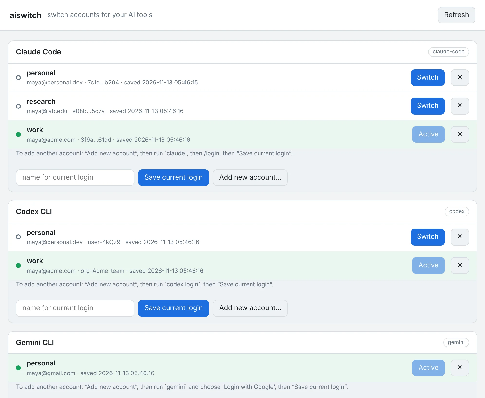

One-command switching
aiswitch use cc work swaps the whole login: credentials, keychain item and account info, nothing else.
The open-source account switcher for Claude Code, Codex CLI, Gemini CLI and Claude Desktop. Save each login once, then flip between personal, work and team accounts in a second. No logging out, no logging back in.

Features
A personal plan and a work seat. A client org and your own. aiswitch keeps every account one command away, without touching your passwords.
aiswitch use cc work swaps the whole login: credentials, keychain item and account info, nothing else.
Refreshed tokens are written back to the right saved account before every switch, matched by email and org.
macOS Keychain, Windows Credential Manager and the Linux Secret Service. Saved copies stay in the OS store.
aiswitch gui opens a local page with a card per tool. It listens on 127.0.0.1 only and uses a one-time token.
One file of pure Python, no dependencies. It runs on macOS, Linux, the BSDs, WSL and Windows, on Intel or ARM.
It warns about open CLI sessions and closes Claude Desktop for you with --quit. When it can't tell, it says "unknown".
It maps claude.ai, ChatGPT and Gemini accounts to browser profiles in Chrome, Edge, Chromium or Brave, and opens the right one.
Add any tool that keeps its login in files or a keychain with a few lines of platforms.json. Per-OS paths are supported.
No account, no network calls, no telemetry. aiswitch never sees your password, and the official apps make every request.
How it works
aiswitch copies the login each tool already created, such as a credentials file or a keychain item, and puts the right one back when you switch.
Sign in to your first account with the tool itself, then give that login a name.
# after `claude` → /login $ aiswitch save cc personal saved current Claude Code login as 'personal' (you@personal.dev)
Log out locally (your first account stays saved), sign in as someone else, and save again.
$ aiswitch new cc work # `claude` → /login as work $ aiswitch save cc work
Switch in either direction. Refreshed tokens are synced back first, and a backup is always kept.
$ aiswitch use cc personal $ aiswitch ls ● personal you@personal.dev ○ work you@acme.com
Platforms
CI tests every release on Linux, macOS (Apple silicon and Intel), Windows (x64 and ARM64), Alpine and FreeBSD, and against the real OS keychains.
| Tool | macOS | Linux / BSD | Windows |
|---|---|---|---|
| Claude Code | Supported | Supported | Beta |
| Codex CLI | Supported | Supported | Beta |
| Gemini CLI | Beta | Beta | Beta |
| Claude Desktop | Experimental | Experimental | Experimental |
| Web (browser profiles) | Supported | Beta | Beta |
Safety
Credential tools have one job: never lose the thing they're holding. Every switch in aiswitch is built around that.
A failed switch, Ctrl-C, a closed terminal or SIGTERM all put the previous login back. A crash is repaired on the next run.
A locked keychain is an error, never "not logged in". An unsaved login is never replaced without --force.
The login it replaces goes to a rolling backup first. aiswitch purge removes everything it ever saved.
Use your own accounts only. aiswitch moves your logins between your accounts. Don't share snapshots, and don't use it to get around rate limits or plan caps. Check each provider's terms; see the README.
No. It never asks for a password and never sends anything over the network. It copies the login files and keychain items that Claude Code, Codex and Gemini already created on your machine, and restores the right one when you switch.
In ~/.aiswitch (folder mode 700). Keychain-based logins keep their saved copies in your OS keychain; on Windows they are encrypted with DPAPI. File-based logins are plain copies of the originals, so treat that folder like a password file. aiswitch purge deletes everything.
aiswitch rolls back to the previous login. This also happens on Ctrl-C, SIGTERM or a closed terminal. If the machine crashes mid-switch, the next run repairs the leftovers. The replaced login is also always kept as a backup.
CLI sessions already open keep their old token in memory, so restart them after switching; aiswitch warns you when it sees one running. Claude Desktop has to be closed during a switch, and --quit / --launch do that for you.
Any system with Python 3.9 or newer: macOS, Linux, FreeBSD/OpenBSD, WSL and Windows, on x86 or ARM. It is one file with no dependencies. On Windows, use Python from python.org or winget; Cygwin/MSYS Python isn't supported.
aiswitch only swaps your own logins between your own accounts; the official apps make every request. It is not a way to share accounts or get around usage limits, and you shouldn't use it for that. Terms differ and change, so read Anthropic's, OpenAI's and Google's current terms yourself. This isn't legal advice.
Yes. aiswitch is open source under the MIT license. Issues and pull requests are welcome on GitHub.
Install it in one line. Needs Python 3.9+.
$ pipx install aiswitch $ aiswitch doctor
$ uv tool install aiswitch $ aiswitch doctor
# download aiswitch.pyz from the latest GitHub release, then: $ python3 aiswitch.pyz doctor # Windows: py aiswitch.pyz doctor
$ git clone https://github.com/bakisama/aiswitch $ python3 aiswitch/aiswitch.py doctor